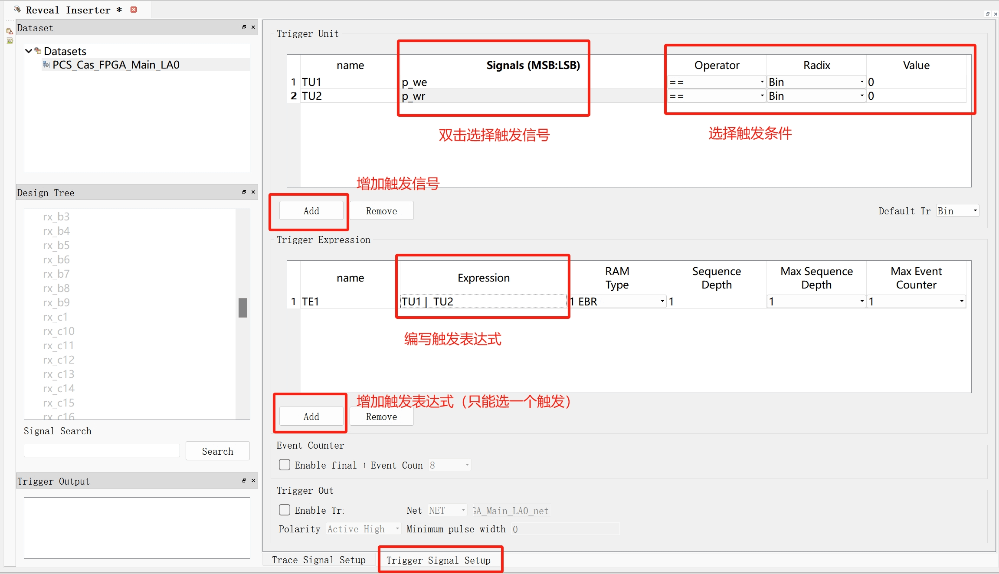

Lattice_Diamond使用教程
本文基于Lattice官网的Lattice Diamond3.13使用教程，仅供学习使用。
该教程针对MachXO3L器件系列的VHDL和Verilog混合设计的所有基本步骤。
官方例程源码结构
官方源码(Verilog和VHDL代码)例程位置：
diamond_install_directory/docs/tutorial/Diamond_tutorial

1 | --count8.vhd |
1 | //count32.v |
1 | //topcount.v |
1 | // testbench.v |
创建Project
按软件引导设置projec名与位置。
注意事项：
Project与其目录名只能为字母、数字、下划线的组合。
project配置硬件信息：
Family: MachXO3L
Device: LCMXO3L-6900C
Performance grade: 5
Package type: CABGA256
Operating conditions: Commercial
在本教程中，选择使用Synplify Pro。
File List说明
创建完后，左侧的File List列出了各文件：
-
Strategies（策略）：
策略是控制实现过程中各阶段（综合、映射、放置和布线等）的设置，
其可控制优化面向速度还是面积，放置和布线的时长，以及许多其他因素。
策略可以有创建多个，根据需要选择其中一个使用即可。
双击策略文件可修改对应的设置。
在本例中，修改Synthesize Design > Synplify Pro > Number of Critical Path为10.修改后的值以斜体显示以示区分。
-
Implementation（实现）：
定义了项目的设计结构元素，包括源代码、约束文件和调试插入。
源代码可以混合使用 VHDL、Verilog 和 EDIF。
文件可以被引用或包含在实现中。
实现之间可以共享引用文件。Input Files- 存放VHDL与Verilog文件。
Synthesis Constraint FilesLPF Constraint Files- 存放引脚分配文件
Debug- 存放Reveal Inserter与Reveal Analyzer生成的文件。（这两个工具用于在线查看FPGA信号）
Script FilesProgramming Files- 放置程序烧写配置文件(.xcf)
可以通过在列表中拖放文件名来调整文件顺序。
引脚分配
创建一个新项目时，会自动生成一个引脚分配文件.lpf，并分配与Project相同的名称。
其中包含了将该设计项目编程到FPGA上所需的所有引脚分配，
对逻辑约束所做的所有更改都将保存在该文件中。
在本教程中，提供了一个名为pin_assignments.lpf的引脚分配文件，位置在：
diamond_install_directory/docs/tutorial/Diamond_tutorial
右键点击LPF Constraint Files即可进行添加，
添加完毕后右键点击该文件设置为Active Preference File。
仿真
testbench选择
在input Files文件夹下右键点击所需的testbench文件，选择include for > simulation。
创建一个IPexpress Module
Lattice提供了很多IP核以供使用，要使用本例程的testbench，需要引入一个IP核。
根据选择的目标FPGA器件型号不同，会有两种不同的IP核菜单：
IPexpress中每一个IP核会生成一个HDL文件用于例化，
Clarity是可以将很多个IP核封装在一起，最终自动生成一个HDL文件用于例化。
本教程中以创建一个PLL模块为例。
- 点击顶栏的
Tool > IPexpress， - 将弹出的窗口最大化（不然很多内容看不到）。在窗口的左侧面板中，选择
Module > Architechture_modules > PLL。 - 在右侧配置面板中，填写File name和文件类型（Verilog或VHDL）
- 点击Customize，出现新弹窗。
- 本教程中，将PLL配置为
Frequency Mode，
配置CLKI Frequency为20；
配置CLKOP Desired Frequency为80，CLKOP Tolerance为1.0；
勾选Provide PLL Lock signal； - 点击Calculate
- 勾选Import IPX to Diamond project
- 点击Generate
此时便会生成.ipx文件。
仿真步骤
在Lattice设计流程中，需要进行三种仿真：
- Before synthesis (RTL)
- Post-map, gate-level
- Post-route, gate-level and timing
以综合前仿真为例。
在仿真器方面，本教程使用 Windows 版 Diamond 随附的 Mentor® ModelSim® Lattice FPGA Edition 仿真器。
进行仿真
虽然可以直接启动仿真器，但最好还是创建一个仿真项目，
以便从 Diamond 运行仿真器。
- 选择顶栏Tool > Simulation Wizard，出现弹窗。
- 点击Next，填入仿真项目的名字，勾选所使用的仿真器（Modelsim）。
- 点击Next，如果仿真项目的位置是默认的，其会告诉你尚未创建对应文件夹，点击Yes自动创建即可。
- 选择所做的仿真类型。
- 点击Next，其会自动将各源文件排序（编译顺序）。
注意ModelSim 不会自动重新排列 VHDL 文件与SystemVerilog 包，因此需要手动将这些类型的源文件进行排序。
在本教程中，typepackage.vhd应当最先编译，
因此在源文件列表中，选择 typepackage.vhd，然后单击向上箭头，直到 typepackage.vhd 位于列表顶部。 - 点击Next，确认simulation top module 是testbench。
- 点击Next，确认Run simulator、Add top-level signals to waveform display、Run simulation被勾选。
- 点击Finish。会自动启动Modelsim并自动运行。
模拟完成后，波形出现。这需要一些时间。
如果看到 "欢迎使用 ModelSim "对话框，请选择对话框底部的 “不再显示”，
然后单击 “关闭”。不要单击 “启动”。 - 查看 Diamond 窗口中的文件列表视图。在
Script Files下，可以看到仿真项目文件夹即仿真文件.spf。
双击.spf文件可以重新运行仿真。
再次运行时可以直接点Skip to end跳到引导页面的最后。
仿真结果

- 在波形窗口按住Ctrl键滑动鼠标滚轮可缩放。
- 在模块选择窗口点击模块，可看到各模块信号在信号选择窗口上显示。
在信号选择窗口可直接将信号拖拽进信号监视窗口进行监视（需要重新运行）。- 在顶栏simulate > Runtime Options可设置若干选项：
- 在default Radix中可选择显示的进制，比如Hexadecimal是16进制；
如果要重新运行，
- 先点击Simulate > Restart,在弹出的窗口选择对应选项，然后点击OK，
- 然后点击Simulate > Run > Run -All，然后会弹出
结束询问窗口，切记点击No。 - 再次仿真结束后，会自动打开testbench的源文件，关闭即可。
检查器件资源
Diamond 提供可视化工具，帮助了解和记录目标器件的物理资源和资源利用情况。
综合后，您可以查看计算出的资源利用率。
要查看器件资源，在顶栏Tools > Device View中可查看。
Synthesis（综合）
Diamond集成了两种综合工具：
- Synopsys Synplify Pro for Lattice
- Lattice Synthesis Engine (LSE)
注意LSE不适用于LatticeEC、LatticeECP、LatticeSC/M或LatticeXP。
本教程使用Synplify Pro for Lattice来综合在MachXO3L FPGA上的设计。
要更改合成工具，
在 Diamond 主窗口中选择 Project > Active Implementation > Select Synthesis Tool。
综合设计并检查资源利用率：
- 在Process视图中，双击Systhesize Design。
完成后，检查Process中Systhesize Design旁边的图标。
绿色复选标记表示成功；
黄色三角形表示成功并带有警告；
红色 X 表示失败。

- 单击 Hierarchy—Post Synthesis Resources tab选项卡，
此视图显示设计各层次的逻辑资源数量。
资源数据中，括号外的数据表示使用的总数，括号内的数据表示这一层级使用的数量。
设置时序与端口分配
时序和端口分配对逻辑综合以及后端映射和布局布线程序进行约束，以满足设计要求。
约束良好的设计有助于优化算法尽可能高效地工作。
- 在Process视图中，双击Translate Design。
- 选择Tool > Spreadsheet View，出现电子表格视图。
电子表格视图是多个首选项编辑器之一，可用于为布局布线工具定义时序、I/O 和平面图约束。 - 单击电子表格视图工具栏上的PERIOD/FREQUENCY Preference，弹出窗口。
- 在弹出的窗口左侧有一排按钮（可能会很小），
点击其PERIOD/FREQUENCY Preference按钮（绿色连续脉冲的样式），弹出相关窗口。 - 在窗口中选择/输入相关信息：
- Type: FREQUENCY
- Second Type: Net
- Available Clock Nets: CLKOP
- Frequency: 80
选择完毕后点OK。
- 此时当前窗口会切换到Timeing Preferences子页面（在窗口下方可看到各子页面选项），
其中显示我们定义了FREQUENCY的相关信息，这些信息可直接在上面修改。 - 点击左侧按钮栏的INPUT_SETUP/CLOCK_TO_OUT Preference，出现对应窗口。
- 在窗口中选择/输入相关信息：
- Type: INPUT_SETUP
- Second Type: ALL ports
- Clock Ports/Nets: clk
- Time: 50
- Hold time: 12
选择完毕后点OK。
- 此时Timeing Preferences子页面新增我们定义的
INPUT_SETUP的相关信息。 - 右键点击上面提到的
INPUT_SETUP，选择New INPUT_SETUP，弹出对应窗口。 - 在窗口中选择/输入相关信息：
- Type: INPUT_SETUP
- Second Type: Individual ports
- Available Input Ports: reset
- Clock Ports/Nets: clk
- Time: 50
选择完毕后点OK。
- 此时Timeing Preferences子页面新增我们定义的
INPUT_SETUP的相关信息。
- 在主窗口下方点击Port Assignments子页面，
其显示了pin_assignments.lpf文件中的端口配置以及每个端口的规格。
如有需要可以在此进行更改。 - 保存该文件并关闭。
- 在左侧的File View窗口双击
LPF Constraint Files下的pin_assignments.lpf，自动弹出其内关于时序与端口分配的内容。
确认无误后关闭。 - 切换至左侧的Process view窗口，双击Map Design，运行逻辑综合、EDIF 转换和设计映射器的批处理程序。
如果是第一次综合，会自动弹出报告界面，否则，在顶栏View > Reports中打开报告界面。 - 报告界面的左侧是
Design Summary选项栏，对应报告的各分项。
如果对应项已正常生成报告，图标显示为绿色勾；
如果报告不是最新版本，图标显示为橙色问号；
某些报告分为多个部分，单击报告名称前的箭头可在列表中显示各部分。
在报告窗口右键选择Find in text可按进行关键词查询。
直接编写lpf
1 | // 指定信号与FPGA引脚的映射 |
布局与布线
- 在左侧的Process view窗口，双击Place & Route Design，运行相关工具。下方信息窗口会显示过程相关信息。完成后，自动弹出报告界面。
- 在报告界面的左侧
Design Summary选项栏查看Process Reports > Place & Route，正常执行时图标为绿色勾。 - 在左侧的Process view窗口，双击Place & Route Trace，运行跟踪时序分析工具。
- 执行完成后，在
Design Summary选项栏查看Analysis Reports > Place & Route Trace状态。 - 在左侧的Process view窗口，双击I/O Timing Analysis，运行时序分析。
- 执行完成后，在
Design Summary选项栏查看Analysis Reports >I/O Timing
Analysis状态。 - 选择顶栏Tools > Physical View，弹出对应窗口。
物理视图提供设计的只读详细布局，包括开关盒和物理导线连接。 - 关于物理布局查看：
- 右键点击元件并选择Show in > Floorplan View可查看在该元件在平面视图中对应的位置。
- 要在 "平面图视图 "和 "物理视图 "之间自动交叉探测，确保这两个视图都连接到 Diamond 主窗口，
然后右键单击Floorplan View选项卡并选择Split Tab Group。
当同时打开平面图视图和实物图视图时，在其中一个视图中选择的项目会自动在另一个视图中选择。自动交叉探测对于立即检查两个视图中的连接尤其有用。
检查静态时序分析
静态时序分析 (STA) 可以确定电路设计是否符合时序约束。
与模拟相比，静态时序分析采用保守的门延迟和互连延迟建模，以反映不同芯片上的不同工作条件范围，从而提供完整的验证覆盖范围。
- 选择顶栏Tools > Timing Analysis View，弹出窗口。
左上窗格显示布线后静态定时分析设置的摘要，如目标设备信息、首选项文件、性能等级和环境条件。
左下窗格提供可用分析结果的索引。相关的时序首选项出现在每个分析部分。 - 在主窗口中点击
FREQUENCY NET "CLKOP"(任选一个)。
右上方的Path table包含源、目的地、加权松弛、到达、所需、数据延迟、路径、级别和其他详细信息。 - 选择Path table第一行，
右下窗格中的三个选项卡将显示详细信息。 - 单击下面的Detailed Path Tables选项卡，在选项卡上方单击Data Path Details选项卡。
该页面将识别数据路径延迟的每个组成部分，在路径延迟和组合或时钟到输出类型延迟之间交替进行。 - 单击下面的Schematic Path View选项卡，可查看数据通道时序路径示意图。
- 关闭时序分析窗口。
- Diamond允许为时序分析指定峰峰值系统抖动。
不使用时，默认值 0 将用于所有分析。
系统抖动会影响设计中的所有时钟。
要输入系统抖动值，
请选择Tools > Spreadsheet View。
单击Global Preferences选项卡。
双击SYSTEM_JITTER(ns)的值进行修改。
调整静态时序约束
Lattice Diamond的时序分析可以在典型设计流程的四个阶段进行：
- 综合后
- 网表转换到目标器件后的映射后
- 布局后
- 布线后
每个阶段都能逐步提供更准确的延迟特性报告。
综合阶段的时序分析由相应的综合工具执行：
Synplify Pro 或 Precision。
默认情况下，时序分析引擎 TRACE 使用时序驱动的映射、布局和布线应用的时序约束。
但也可以修改时序首选项，以管理独立于静态时序分析的实现工具的时序目标。
为适应试验性静态定时分析循环，TPF 电子表格视图允许编辑定时首选项，以便与定时分析视图一起使用。
这样就可以建立独立于 MPAR 所用约束的修改或附加时序首选项。
收紧偏好的时序目标并检查结果：
- 选择顶栏Tools > Timing Analysis View，弹出窗口。
- 点击窗口左侧工具栏的Change timing preferences按钮。
弹出Spreadsheet View – TPF窗口。 - 点击窗口下方的Timing Preferences选项卡。
- 找到INPUT SETUP > ALLPORTS CLKPORT “clk” > Time，双击首选项值进行修改。
在本例中修改为15. - 切换回
Timing Analysis View窗口，其左侧工具栏的Update此时在转动，点击该按钮。
过一会儿，指示器停止旋转，新的分析结果就会出现。
在Timing Analysis View的标题栏中，"Untitled"带星号，
表示内存中的定时首选项已更改。
点击顶栏File > Save Untitled As将更改保存到文件（.tpf）中。
.tpf文件将出现在File List > Analysis Files中。
通过这些.tpf文件，可以尝试不同的时序设置，而不会影响.lpf源文件。
能耗分析
Diamond 软件中包含 Power Calculator，可估算给定设计的功耗。
功率计算器使用电压、温度、工艺变化、气流、散热器、资源利用率、活动和频率等参数来计算器件的静态和动态功耗。
-
选择顶栏Tools > Power Calculator，弹出窗口。
功率计算器在计算模式下打开。 功率计算器提供两种报告功耗的模式：- Estimation Mode: 功耗计算器可根据提供的器件资源或模板估算功耗。通过该模式，可以在设计完成甚至开始之前估算设计的功耗。
- Calculation Mode：Power Calculator 基于器件资源计算功耗，器件资源来自设计的.ncd文件，或来自贴片和布线后的外部文件，如值变化转储.vcd文件。该模式以实际器件利用率为基础，用于精确计算功耗。
编辑白色单元格中的数据（如电压、频率、活动因子和热数据）不会改变模式。编辑蓝色单元格中的数据（如设计数据）会将计算模式更改为估算模式。
-
当修改完相关数据后，会自动计算得出能耗。保存报告文件为.pcf，
其一般存放在File List > Analysis Files。
烧写程序
在左侧Process > Export Files中可以设置要导出各种文件，（包括下载进FPGA的二进制文件.bit）
双击Export Files或点击顶栏绿色的Run按钮执行导出。
将二进制文件下载进FPGA
- 选择顶栏Tools > Programmer，弹出窗口。
- 在窗口中选择Create a new project from a JTAG scan
- 点击Detect Cable
线缆和端口框会自动更改，以显示与器件的连接。
如果看到Programmer: Multiple Cables Detected dialog box，选择正确的端口并单击 “确定”。 - 点击OK。
会在File list->Programming Files生成对应的.xcf文件。
编程器扫描设备数据库，然后在 Diamond 中显示编程器视图。 - 在编程器窗口中，单击第一行的任意位置。
- 选择Edit > Device Properties，弹出窗口。
- 根据需要的操作进行设置:
Access Mode：- JTAG1532 Mode
- Static RAM Cell Background Mode
- Advanced Security Keys Programming
SPI Flash Background Programming（对于将程序烧写进flash的操作，选择此项）- Slave SPI Interface Programming
- Serial Mode
根据Access Mode的不同，能执行的操作也不一样，当选择了SPI Flash Background Programming时：
- Operation：（下面仅显示部分常用操作）
- SPI Flash Verify Only
- SPI Flash Erase All
SPI Flash Erase,Program,Verify- Scan SPI Flash Device
- SPI Flash Read and Save
- Programming File：（选择对应的二进制文件）
Programming Options选择本项目生成的bit文件即可。
对于SPI Flash Options：
其各个参数需要根据使用的Flash芯片来选择， Family用于选择SPI协议类型Vendor用于选择flash芯片的厂家Device与Package用于选择flash芯片的具体型号与封装
对于SPI Programming选项，一般保持默认即可，
可勾选Erase SPI Part on Programming error，使得在烧写错误时擦除flash。
点击OK
- 点击编程器工具栏的绿色按钮Program执行下载。
如果编程过程成功，将在编程器状态栏中看到绿色阴影的PASS。
如果重新生成了
.bit文件，在烧写前最好重新选择此文件。
在线Debug
使用Reveal Inserter可设置需跟踪的信号与捕捉触发条件。（Reveal core）
使用Reveal Analyzer可进行在线监视Reveal Inserter设置好的信号。
Reveal Inserter
设置待捕捉信号
生成并添加一个Reveal core：
-
选择顶栏Tools > Reveal Inserter，点击主窗口下方的Trace Signal Setup选项卡。
-
在左侧的
Design Tree面板中显示了程序中的各个模块，可以通过拖动将模块拉至右侧的Trace Data面板中。 -
右键点击被拖到右边面板的信号，选择Rename Trace Bus可进行重命名。
设置捕捉条件
- 点击主窗口下方的Trigger Signal Setup选项卡。
在Trigger Unit面板中出现一行，默认名称为 TU1。 - 点击
TU1可进行重命名。 - 在左侧的
Design Tree面板中拖动到Trigger Unit面板触发单元的Signals(MSB:LSB)中进行被捕捉信号的设置。并设置捕捉操作符、进制、捕捉值。 - 点击Trigger Unit下方的
Add可添加捕捉单元。

检查、激活并保存配置
在线捕捉波形
器件应当通过仿真器连接到计算机。
创建新的Reveal Logic Analyzer项目
- 点击顶栏Tools > Reveal Analyzer，弹出窗口。
- 勾选
Create a new file，输入项目名字 - 选择设备与电脑的连接方式，比如
HW-USBN-2B (FTDI)，点击Detect，如果设备正常连接到电脑，则会列在USB port中。 - 点击Scan找到FPGA
- 在
RVL source中，选择上一节生成的.rvl文件。 - 点击OK，弹出窗口。
- 在Trigger Options指定触发的相关参数；
- 在Trigger Position部分，可以指定相对于轨迹数据的触发位置。
该标题中的数字显示当前位置。其内的选项含义为：- Pre-selected：选择其中一个标准位置
Pre-Trigger：距离采样起始位置 4/64 的位置。Center-Trigger：距离采样起始位置还有 32/64 的距离。Post-Trigger：距离采样起始位置还有 57/64 的距离。
- User-selected：用滑块选择位置
- Pre-selected：选择其中一个标准位置
运行逻辑分析
- 在
Reveal Analyzer工具栏，点击绿色的Run按钮。
该按钮会变成红色的Stop按钮，按钮旁边的状态栏会显示进度。
Reveal Analyzer 首先为正确的触发条件配置所选模块，然后等待触发条件发生。触发发生后，数据将上传到计算机。
生成的波形显示在LA Waveform选项卡中。
触发表达式可以对下一个触发单元进行评估，并生成一个要捕获数据的触发器。 - 如果没有触发，可以点击Manual Trigger按钮以手动捕捉。